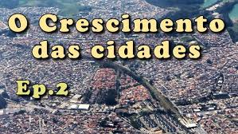
O Crescimento das Cidades
Nesta videoaula entenda como as cidades se desenvolvem, as causas da expansão urbana e os desafios da infraestrutura nas metrópoles modernas.
O crescimento urbano e a formação das cidades trouxeram profundas transformações na estrutura social, econômica e ambiental do planeta. A concentração de pessoas nas áreas urbanas acelerou o desenvolvimento, mas também intensificou desafios socioespaciais e ambientais.
A urbanização é o processo em que a população urbana cresce em ritmo mais acelerado do que a população rural. Esse movimento é impulsionado pelo êxodo rural, pela busca de melhores condições de vida, emprego e acesso a serviços básicos.
Com o avanço da urbanização, as cidades enfrentam a necessidade de infraestrutura de transporte, saneamento, moradia e energia. Quando esse crescimento ocorre sem planejamento adequado, surgem graves problemas urbanos, como a periferização e a desigualdade socioespacial.
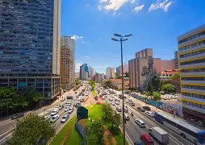
A migração rural-urbana é o movimento de pessoas que deixam o campo para morar nas cidades. Esse fenômeno foi muito forte no Brasil durante o século XX, motivado pela industrialização, mecanização do campo e em busca de empregos e melhores condições de vida.
A chegada rápida e massiva de migrantes causou o inchaço das áreas urbanas, gerando a formação de periferias e favelas, além de sobrecarregar os serviços de transporte, saúde e infraestrutura urbana.
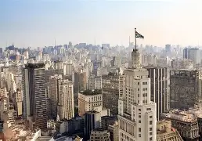
O crescimento rápido e desordenado das cidades gera diversos problemas ambientais e sociais. Entre eles destacam-se a poluição do ar e da água, o descarte inadequado de resíduos sólidos e a destruição de vegetações nativas.
Além disso, o trânsito intenso, a falta de saneamento básico e a ocupação de áreas de risco causam grandes impactos no cotidiano das pessoas, gerando alagamentos e deslizamentos frequentes.
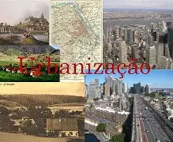
A exclusão socioespacial ocorre quando a população de menor renda é empurrada para áreas periféricas com pouca ou nenhuma infraestrutura. Essa segregação impede o acesso pleno aos direitos básicos, como saúde, educação, transporte e segurança.
Esse cenário perpetua a desigualdade e dificulta a inclusão social, exigindo políticas públicas de habitação, regularização fundiária e investimentos no transporte comunitário.
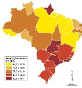
A expansão urbana nem sempre acompanha o ritmo das necessidades da população, resultando em contrastes sociais visíveis na paisagem das cidades.
O crescimento de bairros sem planejamento e o adensamento populacional nas periferias mostram a urgência de intervenções urbanísticas e de investimentos em serviços sociais fundamentais.
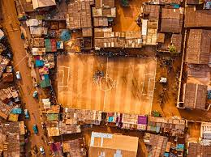
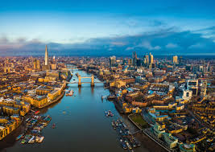
A urbanização brasileira acelerou fortemente a partir de meados do século XX, transformando um país majoritariamente rural em uma sociedade urbana.
Esse processo gerou grandes metrópoles e redes urbanas complexas, trazendo desafios constantes de mobilidade, infraestrutura e sustentabilidade para os gestores públicos.
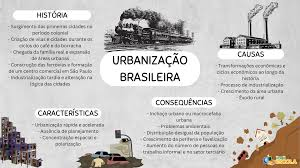
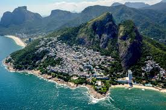
O relevo e a geografia das cidades brasileiras frequentemente influenciam a ocupação do solo, exigindo planejamento especial para prevenir riscos de desastres naturais nas encostas e várzeas.
Aprenda mais sobre o crescimento das cidades e a sociedade com estas videoaulas preparatórias!

Nesta videoaula entenda como as cidades se desenvolvem, as causas da expansão urbana e os desafios da infraestrutura nas metrópoles modernas.
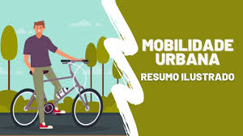
Entenda como as cidades podem crescer de forma sustentável, integrando áreas verdes, reciclagem e energia limpa no planejamento.
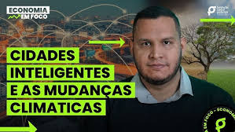
Conheça o conceito de Smart Cities e como a tecnologia é usada para otimizar serviços públicos e a qualidade de vida da população.